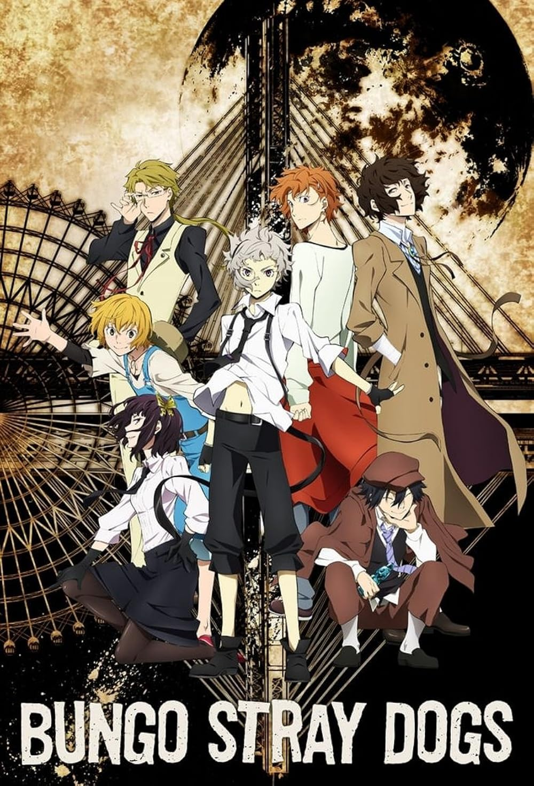
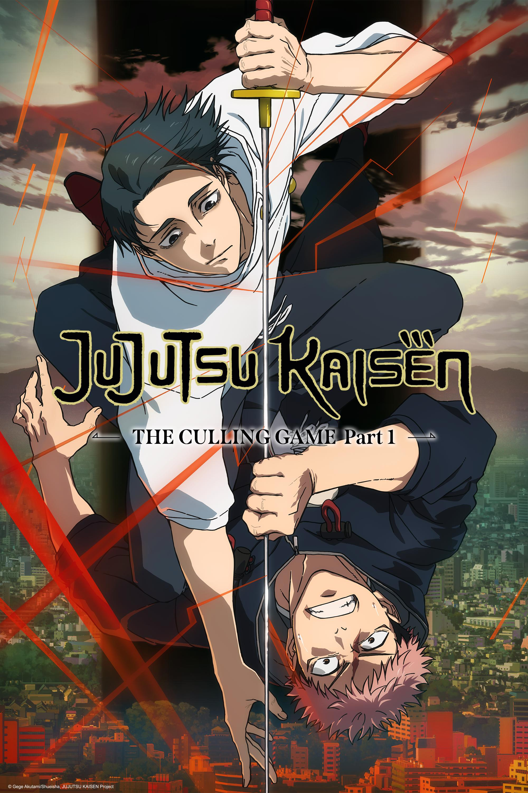
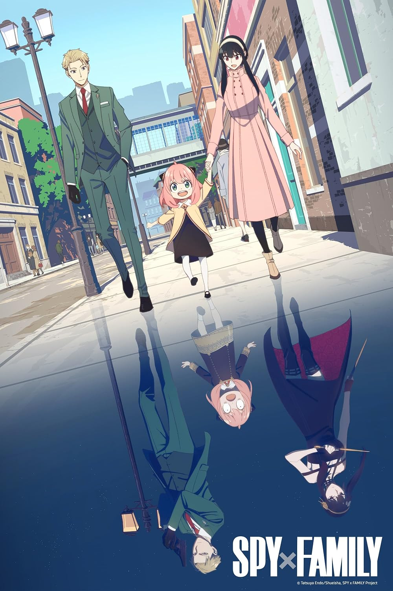
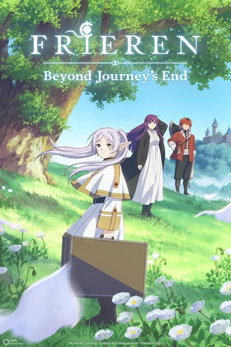
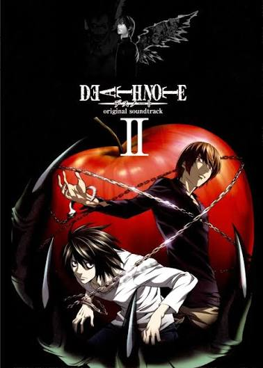
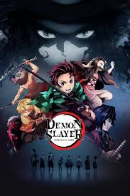

Bungou Stray Dogs

Géneros: Acción y misterio.
Atsushi Nakajima se une a una agencia de detectives cuyos integrantes poseen habilidades especiales.
Encontrá tu próximo anime favorito
¿No sabés qué anime mirar? Explorá nuestras recomendaciones y descubrí nuevas historias, personajes y mundos.

Géneros: Acción, aventura y fantasía.
Edward y Alphonse Elric emprenden un viaje para recuperar sus cuerpos después de un intento fallido de utilizar la alquimia para revivir a su madre. Durante su aventura, descubren secretos que podrían cambiar el destino de su país.
¿Por qué verlo? Por su historia, sus personajes y los temas que desarrolla.
Estas son algunas de nuestras recomendaciones.

Géneros: Acción y misterio.
Atsushi Nakajima se une a una agencia de detectives cuyos integrantes poseen habilidades especiales.

Géneros: Acción y sobrenatural.
Yuji Itadori se adentra en el mundo de las maldiciones después de un encuentro que cambia su vida.

Géneros: Deportes y comedia.
Shoyo Hinata sueña con convertirse en un gran jugador de vóley y mejorar junto a su equipo.

Géneros: Comedia y espionaje.
Un espía crea una familia falsa para cumplir una misión, sin saber que cada integrante oculta un secreto.

Géneros: Fantasía y aventura.
Después de una gran aventura, una elfa comienza un nuevo viaje para comprender mejor a los humanos.
Géneros: Romance y comedia.
Kyoko Hori e Izumi Miyamura descubren aspectos inesperados de sus vidas fuera de la escuela.

Géneros: Misterio y suspenso.
Light Yagami encuentra un cuaderno sobrenatural que le permite provocar la muerte de las personas cuyos nombres escribe en él.

Géneros: Acción y fantasía.
Tanjiro Kamado se convierte en cazador de demonios mientras busca una forma de ayudar a su hermana.
Acción · Aventura · Romance · Comedia · Fantasía · Misterio · Deportes
ANIMEVERSE es un proyecto escolar creado para compartir recomendaciones de anime y ayudar a los espectadores a encontrar nuevas historias para disfrutar.